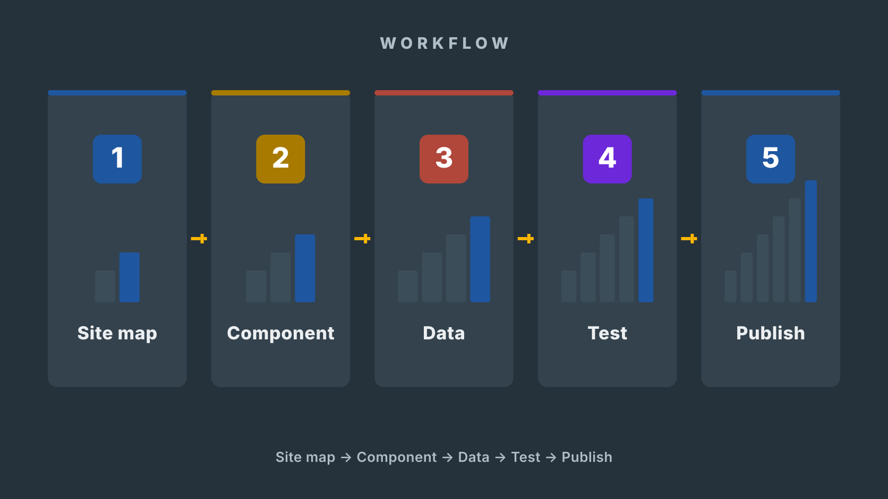

Build in your project folder
The real work happens in your local repository: src/ for components, public/content/ for the language data (JSON), tests/ for unit tests.
The dev server (npm run dev) shows changes instantly.Demonstration project · weeks 36–49
You created a language. In this project you build the website that presents it: a React app where every grammar table comes from data, one view is built from scratch, and the result is published for real learners. You work one week at a time on this page, keep your project journal here, and push every work sample to your Git repository. The demonstration assesses your web development skills — the language itself is your own source material.

Four qualification units · 44 requirements
This one project is the demonstration for four qualification units — Tieto- ja viestintätekniikan perustehtävät (25 competence points), Ohjelmointi (45), Ohjelmistokehittäjänä toimiminen (45) and Ohjelmiston toteuttaminen ohjelmistokomponenttikirjastolla (30) — 44 assessed requirements in total, all listed in the evidence matrix at the end of this page. In practice you learn and show how to set up a real toolchain and publish through it, how to write structured, maintainable and tested React code, how to plan work as issues, estimate it and review it with a client, and how to choose a component library on measured evidence and build an accessible site on it. Nothing is assessed separately: every requirement is proved by the work you do in these weeks and by the work sample it leaves behind — a commit, a memo, a test row.
One thing worth saying plainly: the qualification units also include competencies that are demonstrated in a team. That is why the weekly tasks talk about a team, reviews and a client even though you build this project alone — the supervising teacher acts as the client and the supervisor when one is needed, and the agreements, reviews and shared decisions are held with them or with another named person. Those conversations are assessed competence in their own right, not a formality.
Read this before week 36
In this project you do not fill in the same answers in a separate Word template. This site's project journal is the project's plan log, work diary and evidence index.
The real work happens in your local repository: src/ for components, public/content/ for the language data (JSON), tests/ for unit tests.
The dev server (npm run dev) shows changes instantly.The tasks live as GitHub issues. Finished work shows up as small saved changes (commits).
One issue = usually half a day or one day of work.At the end of every week you answer three questions: what and how, why, and where the work sample is.
The fields are stored only in this browser.Download the whole project journal at the end of every week and replace the old file in the repository.
File:project-docs/project-journal.md. The repository is public — never commit personal data.Do this once, at the start
project-docs and commit.Export your answers regularly. Browser storage does not travel to another device, and it never replaces the work sample in Git.
0 / 11 weeks recordedThe paper work pack is a schedule and a checklist for the moments when this page is not open. You never rewrite your answers into it.
The teacher's source documents feed this build path. Their topics are already inside the weekly tasks and the project journal. Fill in a separate template only if the teacher gives you a separate instruction.
Remember: the ticks and text fields on this site are your own working memory. They are stored only in this browser and never reach the teacher. A tick is not a submission and not part of the evidence. Tick only when the work is tested and the work sample is in the Git repository.
Original brief · given 31 Aug 2026
I have spent years building a language. Ionian — Lingua Ioniana — is a Romance language with its own alphabet, three genders, its own numbers and its own café small talk. Right now it lives in a 58-page reference PDF that only I can navigate. I want a website where a curious learner can actually find things: how a letter is pronounced, how the pronouns change when you talk to a friend or a stranger, which article goes with which gender, and how to count to ten thousand.
Accuracy matters more than volume. No AI and no other person knows this language, so every table on the site must be checked against my PDF — an invented form is a bug. My terms of use stay visible: the material is mine, it is shared to spread awareness of Ionian, and the site credits me as the author. Where my PDF is still under construction, the site says “coming later” instead of making content up.
At the end of October I want to try a half-way version at a real web address on my own phone, and I will bring along a tester who has never seen Ionian. I want to hear, in their words, whether they can find the alphabet, read a pronoun table and understand what this language is — without me explaining anything.
By the fourth of December I want version 1.0 at a public URL: a site with a number converter I can show off, a phrasebook where a beginner can learn my café dialogue, and a README good enough that another person can get the project running without asking me anything.
Agreed implementation
React + Vite (JavaScript). A component library chosen by comparison in week 38 — the tables, tabs and navigation build on it, and the number converter view is built from scratch without it. All content lives as JSON in public/content/ and is fetched at runtime. Unit tests with Vitest in Node. Published on GitHub Pages.
P0 minimum: Home · Alphabet & Pronunciation · Pronouns · Nouns, Articles & Gender · Numbers + converter · Phrasebook & Chapter 1.
Keep the scope
Named temptations that are not in this project: an interactive verb conjugator, audio recordings, user accounts, and content for the PDF's under-construction pages 57–58 — the site says “coming later”. The Verbs overview (P1) may start only if P0 is complete by the end of week 46.
Agree with the supervisor
These are not yours to decide — not alone and not with AI. Empty means “open item”, and that is the correct state until agreed:
1 · The license of the code (the language material keeps its own terms).
2 · The institution's line on the device-security evidence (t12).
3 · Your public author name on the site and the repository.
4 · Who acts as the external tester in weeks 44 and 48.
5 · How the review notes may record people (first name and role only).
Source material and tools
The 58-page reference PDF is the single source of truth for all language content: every table is typed from it and verified against it. Fonts come from Google Fonts and icons from the chosen library — both listed in CREDITS. The flag and column motif may be redrawn as your own simple SVG; no images from elsewhere. AI may help with React code (logged in the AI log) — never with Ionian content.
Keep the red thread visible
Technical plan · fill in during weeks 36–37
The pre-filled sections come from the brief. You write the decisions that are yours: goal, audience, component library, scope. The supervisor owns the open items — do not decide those yourself or with AI.
Timing: Draft it in week 36, finish it by the end of week 37, and update it when the supervisor answers an open item.

Pre-filled · included in the downloaded file
A public reference site for Ionian (Lingua Ioniana), a constructed Romance language. React + Vite, all grammar content as JSON under public/content/, fetched at runtime — the source of truth is the author's reference PDF. Published on GitHub Pages. The whole project is in English.
P0: Home · Alphabet & Pronunciation · Pronouns · Nouns, Articles & Gender · Numbers & Comparison with the converter · Phrasebook & Chapter 1. P1 (only if P0 is done by the end of week 46): Verbs overview. P2: Word-building. Out: conjugator, accounts, audio, PDF pages 57–58.
Content JSON is loaded at runtime with fetch() from public/content/. Loading and error states are implemented in week 39. Every content file is checked against the reference PDF — an invented form is a bug. A broken-network response is a test case.
At least 12 planned test cases with the expected result written before the run, 3 complete debugging chains, an accessibility pass with Lighthouse before/after pairs, a client review in week 44 and an external user test in week 48.
The student is the developer AND the client in the language creator's role. The supervisor acts as the client's representative in reviews. The external tester is a different person who has never seen Ionian.
License of the code · the institution's device-security policy line (t12). An empty field is the correct result until these are agreed.
Open items are not filled in by the student or by AI. They are agreed with the supervisor and updated into the plan afterwards.Getting started
This is not a separate task list. The same work is done inside the week cards 36–38. By the end of the first phase an empty but real app is live at your public URL.
Read the brief, underline the requirements and write down every unclear point as a question for the kickoff talk.
Agree the scope: which views are P0, what is explicitly out (the conjugator!), and who reviews the site in week 44.
Install Node LTS, create the Vite + React app, run it locally and open it from your phone over the local network.
Draft the technical plan from the pre-filled sections and split the P0 work into GitHub issues.
Deploy the empty app to GitHub Pages and verify the public URL works on another device. First commit, first deploy — the pipeline exists.
How the site grows
Open only the current week. Read the week's result first: it tells you what exists after the week that did not exist before. Work through the steps in order, test the done-when condition and fill in the week's project journal.

Weeks 36–38
Guided work How to proceed
Before you continue: filled from data.
Show: kickoff notes with the question list, the repository with its README, the first deploy live at the public URL, the plan draft, the P0 backlog — and the phone screenshot in project-docs/evidence/week-36/.
Guided work How to proceed
Before you continue: filled from data.
Show: letters.json, the Alphabet view live at the public URL, the validation script in tools/ and its pass/fail output in the journal.
Guided work How to proceed
Before you continue: filled from data.
Show: project-docs/library-comparison.md with measured numbers, the themed shell live at the public URL, and the Home view with the credit and the terms of use.
Weeks 39–44 · no project work in weeks 41–43
Guided work How to proceed
Before you continue: filled from data.
Show: pronouns.json, GrammarTable.jsx, the tabbed Pronouns view live, and the loading/error screenshots in project-docs/evidence/week-39/.
Guided work How to proceed
Before you continue: filled from data.
Show: the Nouns & Articles view live, the v0.5 tag, and the committed review agreement with names and a date.
5–9 Oct
This week is reserved for other studies. No project tasks and no catch-up work. Continue in week 44 from the latest working main version.
12–16 Oct
No project work and no catch-up tasks. Rest. The site and the v0.5 tag will wait exactly where you left them.
19–23 Oct
Reserved for other studies. The review happens in week 44 — the agreement is already in the repository.
Guided work How to proceed
Before you continue: filled from data.
Show: project-docs/review-2026-w44.md with the two voices separated, the updated backlog, the fix commits, and chain 1 in debugging-chains.md.
Weeks 45–47
Guided work How to proceed
Before you continue: filled from data.
Show: tests/numbers.test.js with PDF-cited expectations, src/lib/numbers.js, the Numbers view live, and the feedback-change commit linked to its finding.
Guided work How to proceed
Before you continue: filled from data.
Show: the Phrasebook live with search, the XSS screenshot, the full test matrix with expected results filled in, and the LICENSE/CREDITS commits.
Guided work How to proceed
Before you continue: filled from data.
Show: the executed test matrix, debugging-chains.md with three complete chains, the Lighthouse pairs in project-docs/lighthouse/, and the refactor commit series.
Weeks 48–49
Guided work How to proceed
Before you continue: filled from data.
Show: the clean-clone notes, user-test-2026-w48.md, deployment-path.md, the instruction-fix commits and the v1.0 release.
Guided work How to proceed
Before you continue: filled from data.
Show: the fully linked matrix, project-docs with the final journal, AI log and self-assessment, and the handover confirmation.
Every working session
Rule of thumb: if you cannot explain the change, the work is not done yet.

Quality assurance
Testing is not just clicking around. Record the expected result, the observed result, the cause of the bug, the fix and the re-test.
AI is an allowed tool
AI may help you with React code, error messages and test ideas — logged, verified and tested. It cannot help you with the content: no model knows Ionian. Every grammar table, every phrase and every expected test result comes from your own PDF and is checked against it. The site structure, the accessibility solutions and the number converter logic are your own work — that is what the demonstration assesses.

Explain in your own words what the solution does and why it fits your own data model and components.
Compare with the official React and library documentation and your own PDF. AI invents fields and commands — and it will invent Ionian.
Run the tests yourself. Never invent test results or feedback.
Record significant use, your own changes and what you learned.
My AI log
Note: the log stored in this browser is working memory, not evidence by itself. It is included in the full project journal download. You can also download the AI log alone and save it in the project-docs folder.
No entries yet.
Evidence
A finished product alone does not show all your competence. A work sample is one artefact that proves a skill: a commit, a screenshot, a test row or a memo. The evidence is all your work samples together, and the same sample can serve several requirements. The requirement names below are in Finnish, exactly as in the national criteria (ePerusteet) that the assessor reads — the description after each name tells you, in English, what proves it in this project.
Opiskelija toimii tieto- ja viestintätekniikan työtehtävissä
Opiskelija tekee tiedonhakua ja ratkaisee tieto- ja viestintätekniikan ongelmia
Opiskelija käyttää tietoteknistä ympäristöä
Opiskelija käyttää ohjelmistokehitysympäristöä
Opiskelija ohjelmoi
Opiskelija toimii ohjelmistokehitystiimin jäsenenä
Opiskelija kommunikoi asiakkaan kanssa
Opiskelija suunnittelee ohjelmiston toteutuksen
Opiskelija kehittää ohjelmiston toimintalogiikkaa ja tietovarastoyhteyksiä
Opiskelija versioi ja julkaisee ohjelman
Opiskelija käyttää kehitysympäristöä
Opiskelija toteuttaa ohjelmiston ohjelmistokomponenttikirjastolla
The last week
Nothing new is added any more. Now the competence is made findable.
Paper schedule
The paper pack helps you follow the schedule and check the demonstration requirements. The actual project journal is written on this page and committed to the repository's project-docs folder.
Published work
The finished v1.0 release is lifted here in week 48: name, screenshot, license and the release link.
The release is published in week 48.